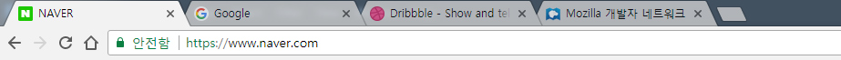

# HTML <div id="copyright"></div>
## 문법
### Element(요소) == Tag(태그)
### 기본 형태 ```html <태그이름>내용</태그이름> ``` ```html <태그이름> <!--열린태그, 시작태그, Start Tag--> 내용 </태그이름> <!--닫힌태그, 종료태그, End Tag--> ```
### 속성(Attributes)과 값(Value) ```html <태그이름 속성="속성값">내용</태그이름> ``` > 태그(요소)의 기능을 확장하기 위해 '속성'을 사용할 수 있습니다.
### 부모 요소와 자식 요소 ```html <부모요소> <자식요소></자식요소> </부모요소> ``` > 요소의 내용으로 새로운 태그를 넣었을 때 '부모와 자식'의 관계가 생깁니다.
### 빈 태그(Empty tag) 종료태그가 없는 태그를 지칭 ```html <!--HTML 1,2,3,4,5--> <태그이름> ``` ```html <!--XHTML, HTML 5--> <태그이름/> ``` ```html <태그이름 속성="속성값"/> ``` > '빈 태그'의 경우 종료태그가 없어 내용을 넣을 수 없으므로,<br>대부분의 빈태그는 속성과 값이 필요합니다.
<div class="line-height-up"></div> ## `<html></html>`,<br>`<head></head>`,<br>`<body></body>` 웹 브라우저가 인식할 문서의 범위를 설정
| 태그이름 | 역할 | |---|---| | `<html></html>` | 문서의 전체 범위 | | `<head></head>` | 문서의 정보를 나타내는 범위 | | `<body></body>` | 문서의 구조를 나타내는 범위 |
```html <!DOCTYPE html> <html> <head> 문서의 정보 </head> <body> 문서의 구조 </body> </html> ``` > `<!DOCTYPE html>`은 뒤에서 설명합니다.
```html <!DOCTYPE html> <html> <head> <title>HTML 코딩하기</title> <meta charset="UTF-8"> <link rel="stylesheet" href="css/common.css"> <script src="js/common.js"></script> </head> <body> <div class="box"></div> <img src="img/card1.png" alt="Card"> </body> </html> ```
## `<!DOCTYPE>` HTML 문서 형식에 관한 버전 정보(DTD- Document Type Definition, 문서형 정의)를 설정. 기술한 유형에 따라 문서의 요소와 속성을 처리하는 기준이 변경되며 유효성 검사에 이용됨
HTML 5 ```html <!DOCTYPE html> ``` XHTML 1.0 Transitional ```html <!DOCTYPE html PUBLIC "-//W3C//DTD XHTML 1.0 Transitional//EN" "http://www.w3.org/TR/xhtml1/DTD/xhtml1-transitional.dtd"> ``` > 현재 표준은 'HTML 5' 입니다.
<a href="https://en.wikipedia.org/wiki/Document_type_declaration" target="_blank">더 많은 문서형 정보 보기</a>
## `<meta>` HTML 문서(웹페이지)에 관한 정보(제작자, 내용, 키워드 등)를 검색엔진이나 브라우저에게 제공
| 속성 | 의미 | 값 | |---|---|---| | `charset` | 문자인코딩 방식 | `UTF-8`<br>etc.. | | `name` | 검색엔진 등에 제공하기 위한 정보의 종류(메타 데이터) | `author`<br>`description`<br>`keywords`<br>`viewport`<br>etc.. | | `http-equiv` | 웹 브라우저에게 전달할 정보(HTTP 응답 헤더 제공) | `refresh`<br>`default-style`<br>etc.. | | `content` | `name` 이나 `http-equiv` 속성의 값을 제공 | |
HTML 5 ```html <meta charset="UTF-8"> ``` XHTML ```html <meta http-equiv="content-type" content="text/html; charset=utf-8" /> ```
## `<title></title>` HTML 문서의 제목(title)을 정의
 ```html <title>NAVER</title> ``` ```html <title>Google</title> ``` ```html <title>Dribbble - Show and tell for designers</title> ``` ```html <title>Mozilla 개발자 네트워크</title> ```
## `<link>` 외부 문서(CSS, Icon 등)를 연결
| 속성 | 의미 | 값 | |---|---|---| | `rel` | (필수)현재 문서와 외부 문서와의 관계를 지정 | `stylesheet`<br>`icon`<br>etc.. | | `href` | 외부 문서의 위치를 지정 | `URL` | | `type` | 외부 문서의 타입을 지정 | `text/css`<br>`image/x-icon`<br>etc.. |
```html <link rel="stylesheet" href="css/reset.css"> <link rel="stylesheet" href="css/common.css"> <link rel="icon" href="favicon.png"> ```
## `<style></style>` 스타일 정보(CSS)를 정의
```html <style> h1 { font-size: 30px; line-height: 1.5; color: red; margin: 30px 10px; } div { width: 100px; height: 50px; background: red; position: absolute; } </style> ```
## `<script></script>` 스크립트 정보(JavaScript)를 정의
| 속성 | 의미 | 값 | |---|---|---| | `src` | 외부 스크립트 파일의 URL | `URL` | | `type` | 외부 스크립트 파일의 타입을 지정 | `text/javascript`<br>etc.. |
```html <script> function onClick(element) { element.addEventListener('click', function () { console.log('click'); }); } onClick(document.getElementById('box')); </script> <script src="js/libs/jquery.js"></script> <script src="js/common.js"></script> ```
## 블록(Block)과 인라인(Inline) 요소 각 요소들이 가지는 보여지는(display) 특성
### 블록(Block) 요소의 특성 1. 항상 새로운 줄(행)에서 시작(수직) 1. 사용 가능한 전체 너비를 사용(`100%`) 1. 크기(`width`, `height`)를 지정 가능 1. CSS `margin`, `padding` 속성의 `top`, `bottom`, `left`, `right` 값을 모두 사용할 수 있음 1. 내용으로 `블록`, `인라인` 요소 모두 포함 가능 > 주로 사이트의 'Layout'(구조)을 나타낼 때 사용합니다.
### 인라인(Inline) 요소의 특성 1. 줄(행) 내 아무 곳에서나 시작(수평) 1. 필요한만큼의 너비만 사용 1. 크기(`width`, `height`)를 지정할 수 없음 1. CSS `margin`, `padding` 속성의 `top`, `bottom`의 값을 사용할 수 없음 1. 내용으로 `인라인` 요소만 포함 가능 > 주로 'Text'(문자)를 다룰 때 사용합니다.
## `<h1></h1>` ~ `<h6></h6>` HTML 문서의 정보 계층을 구조화(heading) | | | |---|---| | **특성(Display)** | 블록요소 | | **특징** | 일반 블록 요소를 포함할 수 없음 | > 내용(Contents)의 제목을 나타낼 때 사용하세요.
```html <h1>생태계</h1> <h2>비생물</h2> <h2>생물</h2> <h3>식물</h3> <h3>동물</h3> <h4>초식동물</h4> <h4>육식동물</h4> <h3>미생물</h3> ``` ``` 생태계 ├─비생물 └─생물 ├─식물 ├─동물 │ ├─초식동물 │ └─육식동물 └─미생물 ``` > `h`의 숫자가 **작을수록** 가장 중요한 제목을 정의합니다.
## `<div></div>` 문서의 부분이나 섹션을 정의(division) | | | |---|---| | **특성(Display)** | 블록요소 |
```html <div> <h1>오늘의 날씨</h1> <p>중부 집중호우, 남부는 열대야, 12호 태풍 북상 중..</p> <img src="img/weather.jpg" alt="12호 태풍"> </div> ``` > 대부분의 요소를 'Wrapping' 할 수 있고, 'Layout'를 나타낼 때 자주 사용합니다.
## `<p></p>` 문장(단락)을 정의(paragraph) | | | |---|---| | **특성(Display)** | 블록요소 | | **특징** | 일반 블록 요소를 포함할 수 없음 |
```html <h1>애국가</h1> <img src="img/korean_flag.jpg" alt="태극기"> <p>동해물과 백두산이 마르고 닳도록</p> <p> 하느님이 보우하사 우리나라 만세 </p> <p> 무궁화 삼천리 화려강산<br> 대한사람, 대한으로 길이 보전하세 </p> ```
## `<br>` 줄바꿈 삽입(break)
## ` ` 띄어쓰기 삽입(HTML 특수기호(Entities))
<a href="https://dev.w3.org/html5/html-author/charref" target="_blank">더 많은 HTML 특수기호 보기</a>
## `<ul></ul>`, `<ol></ol>`, `<li></li>` 목록을 지정(list)
## `<ul></ul>` 순서가 필요없는 목록의 집합(unordered list) | | | |---|---| | **특성(Display)** | 블록요소 | | **특징** | 자식 요소는 `<li></li>`만 사용 가능 |
## `<ol></ol>` 순서가 필요한 목록의 집합(ordered list) | | | |---|---| | **특성(Display)** | 블록요소 | | **특징** | 자식 요소는 `<li></li>`만 사용 가능 |
## `<li></li>` 목록 내 각 항목(list item) | | | |---|---| | **특성(Display)** | 블록요소(list-item) |
```html <!--순서가 필요없는 과일 목록--> <ul> <li>사과</li> <li>딸기</li> <li>수박</li> <li>오렌지</li> </ul> ``` ```html <!--순서가 필요한 시간표--> <ol> <li>1교시 국어</li> <li>2교시 영어</li> <li>3교시 수학</li> </ol> ```
## `<dl></dl>`, `<dt></dt>`, `<dd></dd>` 정의형 목록을 지정(definition)
## `<dl></dl>` 정의형 목록의 집합(definition list) | | | |---|---| | **특성(Display)** | 블록요소 | | **특징** | 자식 요소는 `<dt></dt>`와 `<dd></dd>`만 사용 가능 |
## `<dt></dt>` 용어의 이름(definition term) | | | |---|---| | **특성(Display)** | 블록요소 | | **특징** | 일반 블록 요소를 포함할 수 없음 |
## `<dd></dd>` 용어의 설명(definition description) | | | |---|---| | **특성(Display)** | 블록요소 |
<!--과일에 대한 용어 목록--> ```html <dl> <dt>사과</dt> <dd> <img src="img/apple.png" alt="사과"> 사과는 서늘한 기후에 적당한 온대북부과수, 원산지는... </dd> <dt>딸기</dt> <dd> <img src="img/strawberry.png" alt="딸기"> 우리가 먹는 딸기 종자는 세상에 나온 지 200년 정도... </dd> <dt>수박</dt> <dd> <img src="img/watermelon.png" alt="수박"> 생물학적으로 수박은 과채류, 즉 채소이다. 하지만 언어학... </dd> </dl> ``` > 자주 사용하는 요소는 아니지만, '용어, 참고문서, 링크, 날짜' 등으로 정의된 목록이 필요할 경우 사용합니다.
## `<table></table>`, `<tr></tr>`, `<td></td>` 표를 지정(table)
## `<table></table>` 행(줄)과 열(칸)의 집합(table) | | | |---|---| | **특성(Display)** | 블록요소(table) | | **특징** | 자식 요소는 `<tr></tr>`와 `<td></td>`만 사용 가능 |
## `<tr></tr>` 행(줄)을 지정(table row) | | | |---|---| | **특성(Display)** | 블록요소(table-row) | | **특징** | 자식 요소는 `<td></td>`만 사용 가능 |
## `<tr></tr>` 열(칸)을 지정(table data) | | | |---|---| | **특성(Display)** | 블록요소(table-cell) |
```html <table> <!--줄--> <tr> <td>1-1</td> <!--칸--> <td>1-2</td> <!--칸--> </tr> <!--줄--> <tr> <td>2-1</td> <!--칸--> <td>2-2</td> <!--칸--> </tr> <!--줄--> <tr> <td>3-1</td> <!--칸--> <td>3-2</td> <!--칸--> </tr> </table> ``` > 표 안에 먼저 행(줄)을 만든 후, 각 행(줄) 안에 열(칸)을 만드세요.
## `<a></a>` 특정 페이지로 연결하는 하이퍼 링크(hyperlink)를 정의(anchor) | | | |---|---| | **특성(Display)** | 인라인요소 |
| 속성 | 의미 | 값 | |---|---|---| | `href` | (필수)링크가 연결되는 페이지의 URL | `URL` | | `target` | 링크가 연결되는 페이지를 어디에 열지 설정 | `_self`(기본)<br>`_blank` |
```html <!--경로가 준비되지 않았을 때--> <a href="#">Hello</a> <a href="javascript:void(0);">Hello</a> ``` ```html <!--현재 탭에서 페이지 열기--> <a href="http://www.naver.com">NAVER</a> ``` ```html <!--새로운 탭에서 페이지 열기--> <a href="http://www.naver.com" target="_blank">NAVER</a> ```
## `<span></span>` 특정 요소(text)를 그룹화 | | | |---|---| | **특성(Display)** | 인라인요소 | > 본질적으로는 아무 것도 나타내지 않습니다,<br>대부분 특정 문자를 지정할 때 사용합니다.
```html <span>동해물</span>과 <span>백두산</span>이 마르고 닳도록 ``` ```css span { color: red; /* 빨간색 글자 */ } ``` > 특정 단어나 문장을 `<span></span>`로 지정하면,<br>`CSS`나 `JavaScript`를 사용하여 조작할 수 있습니다.
## `<img>` 이미지를 삽입(image) | | | |---|---| | **특성(Display)** | 인라인요소 |
| 속성 | 의미 | 값 | |---|---|---| | `src` | (필수)이미지의 URL | `URL` | | `alt` | (필수)이미지의 대체 텍스트(alternate)를 지정 | | | `width` | 이미지의 가로 너비 | | | `height` | 이미지의 세로 너비 | |
```html <img src="img/box1.png" alt="파란색 박스" width="200" height="300"> ``` ```html <img src="img/minions.png" alt="미니언즈"> ``` > 대체 텍스트는 이미지를 대신할 수 있는 단어나 문자을 말하며,<br>필수 속성으로 꼭 입력하세요.
## `<input>` 사용자가 데이터를 입력할 수 있는 입력 필드를 지정 | | | |---|---| | **특성(Display)** | 인라인요소(inline-block) |
| 속성 | 의미 | 값 | |---|---|---| | `type` | 입력받을 데이터의 종류 | `text`<br>`checkbox`<br>`submit`<br>`file`<br>`image`<br>`radio`<br>`reset`<br>etc.. | | `name` | `<input>`의 이름(데이터 처리용) | | | `value` | 데이터 값 | | | `maxlength` | 최대 입력 문자수 지정 | | | `placeholder` | 예상 값을 설명하는 짧은 힌트 | | | `checked` | 미리 선택되어 있도록 지정 | `checked` | | `disabled` | 비활성화 되도록 지정 | `disabled` |
```html <input type="text"> <input type="text" value="hello world!"> <input type="text" maxlength="10" placeholder="search..."> ``` ```html <input type="checkbox" checked> ``` ```html <input type="radio" name="select_one"> <input type="radio" name="select_one" checked disabled> <input type="radio" name="select_one"> ``` > 사용자에게 문자, 선택, 파일 등 다양한 종류의 데이터를 입력 받을 수 있습니다.
```html <form action="/submit.php" method="post"> <input type="text" name="name"> <input type="password" name="password"> <input type="submit" value="SUBMIT"> </form> ``` > 일반적으로 사용자게에 입력 받은 데이터는 '제출(Submit)'되기 때문에<br>`<form></form>`와 같이 사용됩니다.
## `<!-- Comment -->` 문서 내 수정사항이나 설명 등을 작성(주석) > 브라우저는 이 태그를 해석하지 않기 때문에 화면에 내용이 표시되지 않습니다.
```html <!--애국가--> <div class="national_anthem"> <img src="img/korean_flag.jpg" alt="태극기"> <h1>애국가</h1> <p>동해물과 백두산이 마르고 닳도록...</p> </div> ```
## 전역 속성 (HTML Global Attributes) 모든 HTML 내 요소에 사용 가능한 속성
### `title` 요소의 추가 정보를 지정 ```html <a href="http://www.naver.com" title="네이버 홈페이지로 이동합니다.">NAVER</a> ``` > `<a></a>`, `<img>` 등에서 요소의 **간략한 설명**을 작성할 때 많이 사용됩니다.
### `class` 요소에 하나 이상의 클래스를 지정 ```html <div class="header"></div> <div class="section visual"></div> <div class="section contents"></div> <div class="section promotion"></div> <div class="footer"></div> ``` > 요소를 지칭하는 중복 가능한 이름으로,<br>스타일(CSS)을 지정하거나 요소를 선택하기 위해 사용합니다.
### `id` 요소의 고유 아이디를 지정 ```html <input type="text" id="search" placeholder="Search..."> ``` > 요소를 지칭하는 고유한 이름으로,<br>같은 아이디 값이 HTML 문서 내 2개 이상 존재할 수 없습니다.
### `style` 요소에 직접 스타일(CSS)을 지정 ```html <div style="color: red; font-size: 20px;">Hello World</div> <!-- 글자색: 빨강; 글자크기: 20px; --> ``` > '선택자(Selector)' 없이 요소에 직접 스타일(CSS)을 지정하는 방법(인라인 선언 방식)으로,<br>작성자의 직접적인 사용은 추천하지 않습니다.
## 경로 절대 경로와 상대 경로
### 절대 경로 변하지 않는 고유한 경로
```html <a href="http://www.naver.com/">NAVER</a> <a href="https://www.google.co.kr/">Google</a> ``` > `http`, `https`로 시작하는 경우 어디서나 접근 가능한 절대 경로입니다. > HTTP(HyperText Transfer Protocol)는 'WWW' 상에서 정보를 주고받을 수 있는 프로토콜입니다. 주로 HTML 문서를 주고받을 때 사용합니다.
```html <a href="/login">sign up</a> <link rel="stylesheet" href="/public/css/main.css"> <!--http://www.mydomain.com/login--> <!--http://www.mydomain.com/public/css/main.css--> ``` > `/`로 시작하는 경우 '최상위 루트'를 의미하게 되며,<br>웹 내에서는 앞에 도메인(아이피) 주소가 위치할 수 있습니다.
### 상대 경로 호출 위치를 기준으로 변할 수 있는 경로
```html <img src="img/minions.jpg" alt="미니언즈"> <link rel="stylesheet" href="./css/main.css"> ``` > 기호가 없이 시작하거나 `./`로 시작하는 경우,<br>경로가 작성된 문서를 기준으로 **주변** 디렉토리(폴더)를 검색합니다.
```html <img src="../img/sub_logo.png" alt="로고"> ``` ```css div { background: url("../img/bg.jpg"); } ``` > `../`로 시작하는 경우, 경로가 작성된 문서를 기준으로 **상위** 디렉토리(폴더)를 검색합니다.